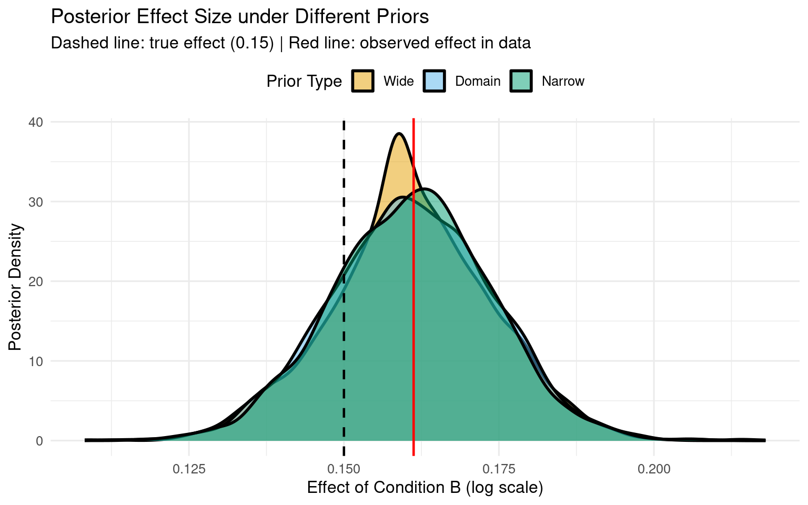
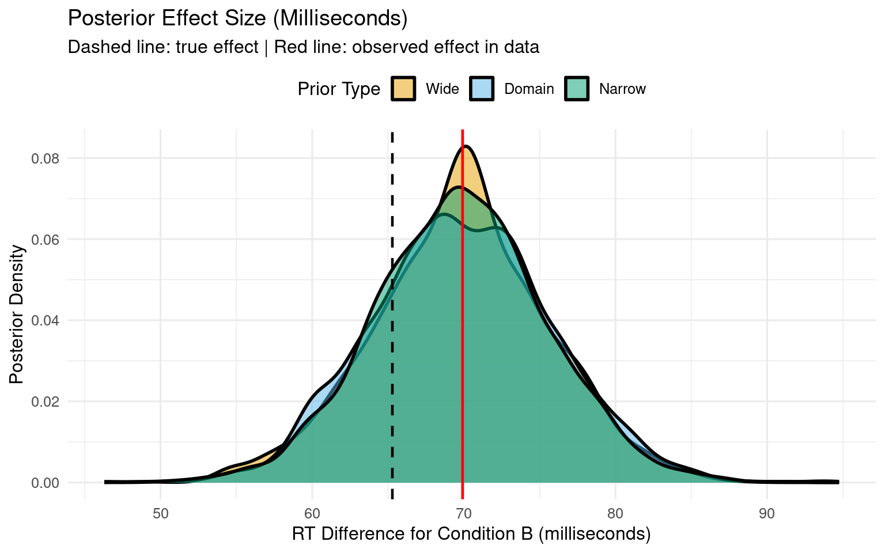
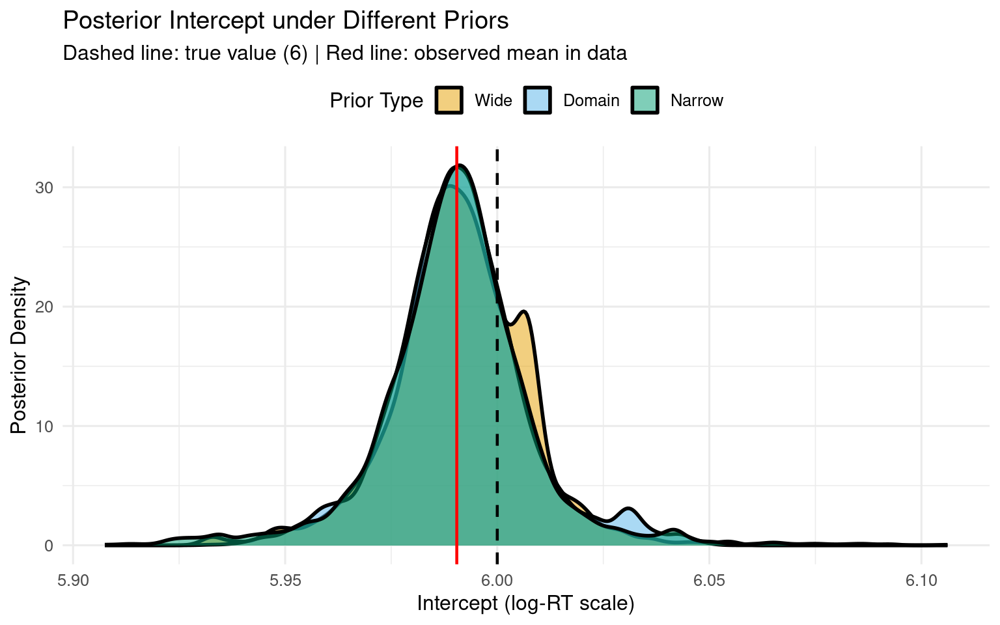
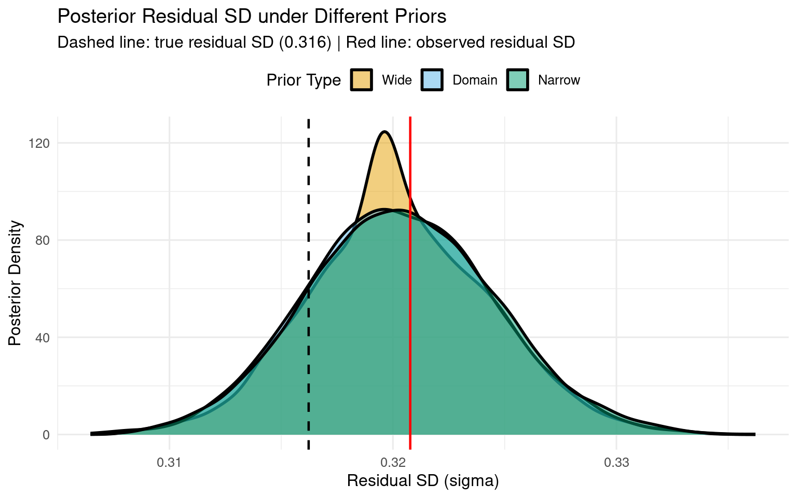

Bayesian Mixed Effects Models with brms for Linguists
Author
Job Schepens
Published
December 17, 2025
1 Comparing Priors: Influence on Coefficients and Effect Sizes
How sensitive are your results to prior choice? Validate robustness by fitting models with different plausible priors.
1.1 Why Compare Priors?
Prior sensitivity analysis shows whether your conclusions depend heavily on specific prior choices or whether they’re robust across reasonable alternatives. This is especially important for:
Publication: reviewers will ask “how robust is your result?”
Model criticism: if results change dramatically with different priors, something’s wrong
Theory building: consistent results across priors = stronger evidence
1.2 Setup
Show code
# Configure backend BEFORE loading brmsif (requireNamespace("cmdstanr", quietly =TRUE)) {tryCatch({ cmdstanr::cmdstan_path()options(brms.backend ="cmdstanr") }, error =function(e) {options(brms.backend ="rstan") })}library(brms)library(tidyverse)library(bayesplot)library(posterior)library(patchwork)# Set seed for reproducibilityset.seed(42)
1.3 Create Reaction Time Data
Show code
# Create example RT datan_subj <-20n_trials <-50n_items <-30rt_data <-expand.grid(trial =1:n_trials,subject =1:n_subj,item =1:n_items) %>%filter(row_number() <= n_subj * n_trials *3) %>%mutate(condition =rep(c("A", "B"), length.out =n()),# Data generation: two independent noise sources, no random effects# Total residual SD = sqrt(0.3^2 + 0.1^2) = 0.316log_rt =rnorm(n(), mean =6, sd =0.3) + (condition =="B") *0.15+rnorm(n(), mean =0, sd =0.1),rt =exp(log_rt) )# Data summarycat("Data summary:\n")
We’ll fit three models with different prior specifications:
Domain-informed priors (our best guess based on RT literature)
Wide priors (less informative, more uncertainty)
Narrow priors (more informative, regularizing)
1.4.1 Define Prior Specifications
Show code
# 1. Original (domain-informed) priorsrt_priors_domain <-c(prior(normal(6, 1.5), class = Intercept, lb =4), # exp(4) ≈ 55ms minimumprior(normal(0, 0.5), class = b),prior(exponential(1), class = sigma),prior(exponential(1), class = sd),prior(lkj(2), class = cor))# 2. Wider priors (less informative)rt_priors_wide <-c(prior(normal(6, 3), class = Intercept, lb =4), # More uncertaintyprior(normal(0, 1), class = b), # Slopes could be largerprior(exponential(0.5), class = sigma), # Less constraint on noiseprior(exponential(0.5), class = sd), # Less constraint on REprior(lkj(2), class = cor))# 3. Narrower priors (more informative / regularizing)rt_priors_narrow <-c(prior(normal(6, 0.8), class = Intercept, lb =4), # Tight around 400msprior(normal(0, 0.3), class = b), # Small effects expectedprior(exponential(2), class = sigma), # Low noise expectedprior(exponential(2), class = sd),prior(lkj(2), class = cor))# Display priors side by sideprior_table <-data.frame(Parameter =c("Intercept", "Slopes (b)", "Residual SD", "Random Effect SD", "Correlation"),Domain =c("N(6, 1.5)", "N(0, 0.5)", "Exp(1)", "Exp(1)", "LKJ(2)"),Wide =c("N(6, 3)", "N(0, 1)", "Exp(0.5)", "Exp(0.5)", "LKJ(2)"),Narrow =c("N(6, 0.8)", "N(0, 0.3)", "Exp(2)", "Exp(2)", "LKJ(2)"))knitr::kable(prior_table, caption ="Prior Specifications for Sensitivity Analysis",align =c("l", "c", "c", "c"))
Prior Specifications for Sensitivity Analysis
Parameter
Domain
Wide
Narrow
Intercept
N(6, 1.5)
N(6, 3)
N(6, 0.8)
Slopes (b)
N(0, 0.5)
N(0, 1)
N(0, 0.3)
Residual SD
Exp(1)
Exp(0.5)
Exp(2)
Random Effect SD
Exp(1)
Exp(0.5)
Exp(2)
Correlation
LKJ(2)
LKJ(2)
LKJ(2)
1.4.2 Fit Models
Show code
# Model formulamodel_formula <- log_rt ~ condition + (1+ condition | subject) + (1| item)# Check for cached modelsdir.create("fits", showWarnings =FALSE, recursive =TRUE)# Fit with domain priorsif (file.exists("fits/fit_rt_domain.rds")) {cat("Loading domain prior model from cache...\n") fit_rt_domain <-readRDS("fits/fit_rt_domain.rds")} else {cat("Fitting domain prior model...\n") fit_rt_domain <-brm( model_formula,data = rt_data, family =gaussian(), prior = rt_priors_domain,chains =4,iter =2000,cores =4,backend ="cmdstanr",seed =1234,refresh =0 )saveRDS(fit_rt_domain, "fits/fit_rt_domain.rds")}
Loading domain prior model from cache...
Show code
# Fit with wide priorsif (file.exists("fits/fit_rt_wide.rds")) {cat("Loading wide prior model from cache...\n") fit_rt_wide <-readRDS("fits/fit_rt_wide.rds")} else {cat("Fitting wide prior model...\n") fit_rt_wide <-brm( model_formula,data = rt_data, family =gaussian(), prior = rt_priors_wide,chains =4,iter =2000,cores =4,backend ="cmdstanr",seed =1234,refresh =0 )saveRDS(fit_rt_wide, "fits/fit_rt_wide.rds")}
Loading wide prior model from cache...
Show code
# Fit with narrow priorsif (file.exists("fits/fit_rt_narrow.rds")) {cat("Loading narrow prior model from cache...\n") fit_rt_narrow <-readRDS("fits/fit_rt_narrow.rds")} else {cat("Fitting narrow prior model...\n") fit_rt_narrow <-brm( model_formula,data = rt_data, family =gaussian(), prior = rt_priors_narrow,chains =4,iter =2000,cores =4,backend ="cmdstanr",seed =1234,refresh =0 )saveRDS(fit_rt_narrow, "fits/fit_rt_narrow.rds")}
Loading narrow prior model from cache...
Show code
cat("\n✓ All models fitted successfully\n")
✓ All models fitted successfully
1.5 Compare Posterior Summaries
Show code
# Extract key parameters using posterior::summarise_draws()extract_key_params <-function(fit, prior_name) { draws <-as_draws_df(fit)# Get fixed effects (b_*) fixed_params <-names(draws)[grepl("^b_", names(draws))] summary_df <- posterior::summarise_draws(draws[, fixed_params]) result <- summary_df[, c("variable", "mean", "q5", "q95")]names(result) <-c("Parameter", "Mean", "Q5", "Q95") result$Prior <- prior_name result[, c("Prior", "Parameter", "Mean", "Q5", "Q95")]}# Combine all resultssummary_table <-rbind(extract_key_params(fit_rt_domain, "Domain"),extract_key_params(fit_rt_wide, "Wide"),extract_key_params(fit_rt_narrow, "Narrow"))knitr::kable(summary_table, digits =3,caption ="Fixed Effects Posterior Summaries Across Prior Specifications",row.names =FALSE)
Fixed Effects Posterior Summaries Across Prior Specifications
Prior
Parameter
Mean
Q5
Q95
Domain
b_Intercept
5.991
5.966
6.020
Domain
b_conditionB
0.161
0.139
0.182
Wide
b_Intercept
5.991
5.966
6.015
Wide
b_conditionB
0.161
0.139
0.182
Narrow
b_Intercept
5.990
5.963
6.017
Narrow
b_conditionB
0.161
0.139
0.181
1.5.1 Compact Comparison Table
Show code
# Extract draws from all three modelsdraws_domain <-as_draws_df(fit_rt_domain)draws_wide <-as_draws_df(fit_rt_wide)draws_narrow <-as_draws_df(fit_rt_narrow)# Create compact comparison table for key parameterscompact_summary <-data.frame(Parameter =rep(c("Intercept", "Condition B Effect", "Residual SD"), each =3),Prior =rep(c("Domain", "Wide", "Narrow"), 3),Lower_95 =c(quantile(draws_domain$b_Intercept, 0.025),quantile(draws_wide$b_Intercept, 0.025),quantile(draws_narrow$b_Intercept, 0.025),quantile(draws_domain$b_conditionB, 0.025),quantile(draws_wide$b_conditionB, 0.025),quantile(draws_narrow$b_conditionB, 0.025),quantile(draws_domain$sigma, 0.025),quantile(draws_wide$sigma, 0.025),quantile(draws_narrow$sigma, 0.025) ),Median =c(median(draws_domain$b_Intercept),median(draws_wide$b_Intercept),median(draws_narrow$b_Intercept),median(draws_domain$b_conditionB),median(draws_wide$b_conditionB),median(draws_narrow$b_conditionB),median(draws_domain$sigma),median(draws_wide$sigma),median(draws_narrow$sigma) ),Upper_95 =c(quantile(draws_domain$b_Intercept, 0.975),quantile(draws_wide$b_Intercept, 0.975),quantile(draws_narrow$b_Intercept, 0.975),quantile(draws_domain$b_conditionB, 0.975),quantile(draws_wide$b_conditionB, 0.975),quantile(draws_narrow$b_conditionB, 0.975),quantile(draws_domain$sigma, 0.975),quantile(draws_wide$sigma, 0.975),quantile(draws_narrow$sigma, 0.975) ))knitr::kable(compact_summary,digits =3,col.names =c("Parameter", "Prior", "2.5%", "Median", "97.5%"),caption ="Posterior Summaries: 95% Credible Intervals Across Prior Specifications",row.names =FALSE)
Posterior Summaries: 95% Credible Intervals Across Prior Specifications
Parameter
Prior
2.5%
Median
97.5%
Intercept
Domain
5.959
5.991
6.031
Intercept
Wide
5.957
5.991
6.021
Intercept
Narrow
5.951
5.991
6.028
Condition B Effect
Domain
0.135
0.161
0.186
Condition B Effect
Wide
0.135
0.160
0.186
Condition B Effect
Narrow
0.136
0.161
0.186
Residual SD
Domain
0.312
0.320
0.329
Residual SD
Wide
0.313
0.320
0.328
Residual SD
Narrow
0.312
0.320
0.329
1.6 Visualize Posterior Comparisons
1.6.1 Effect Size Distributions (Log Scale)
Show code
# Combine all drawsdraws_all <-bind_rows( draws_domain %>%mutate(prior_type ="Domain"), draws_wide %>%mutate(prior_type ="Wide"), draws_narrow %>%mutate(prior_type ="Narrow")) %>%mutate(prior_type =factor(prior_type, levels =c("Wide", "Domain", "Narrow")))# Calculate observed effect from dataobserved_effect <-coef(lm(log_rt ~ condition, data = rt_data))["conditionB"]# Plot effect size distributions (log scale)ggplot(draws_all, aes(x = b_conditionB, fill = prior_type)) +geom_density(alpha =0.5, linewidth =1) +geom_vline(xintercept =0.15, linetype ="dashed", color ="black", linewidth =0.8) +geom_vline(xintercept = observed_effect, linetype ="solid", color ="red", linewidth =0.8) +scale_fill_manual(values =c("Wide"="#E69F00", "Domain"="#56B4E9", "Narrow"="#009E73"),name ="Prior Type" ) +labs(title ="Posterior Effect Size under Different Priors",subtitle ="Dashed line: true effect (0.15) | Red line: observed effect in data",x ="Effect of Condition B (log scale)",y ="Posterior Density" ) +theme_minimal(base_size =12) +theme(legend.position ="top")

1.6.2 Effect Size in Milliseconds
Show code
# Convert to milliseconds# Effect = exp(baseline + effect) - exp(baseline)# Using baseline Intercept from each modeldraws_all_ms <- draws_all %>%mutate(rt_A =exp(b_Intercept), # Baseline RT for condition Art_B =exp(b_Intercept + b_conditionB), # RT for condition Beffect_ms = rt_B - rt_A # Difference in milliseconds )# Calculate observed effect in millisecondsmean_log_rt_A <-mean(rt_data$log_rt[rt_data$condition =="A"])mean_log_rt_B <-mean(rt_data$log_rt[rt_data$condition =="B"])observed_effect_ms <-exp(mean_log_rt_B) -exp(mean_log_rt_A)# Plot effect size in millisecondsggplot(draws_all_ms, aes(x = effect_ms, fill = prior_type)) +geom_density(alpha =0.5, linewidth =1) +geom_vline(xintercept =exp(6+0.15) -exp(6), linetype ="dashed", color ="black", linewidth =0.8) +geom_vline(xintercept = observed_effect_ms, linetype ="solid", color ="red", linewidth =0.8) +scale_fill_manual(values =c("Wide"="#E69F00", "Domain"="#56B4E9", "Narrow"="#009E73"),name ="Prior Type" ) +labs(title ="Posterior Effect Size (Milliseconds)",subtitle ="Dashed line: true effect | Red line: observed effect in data",x ="RT Difference for Condition B (milliseconds)",y ="Posterior Density" ) +theme_minimal(base_size =12) +theme(legend.position ="top")

1.6.3 Intercept Comparisons
Show code
# Calculate observed intercept (baseline for condition A only)observed_intercept <-mean(rt_data$log_rt[rt_data$condition =="A"])# Plot Intercept distributionsggplot(draws_all, aes(x = b_Intercept, fill = prior_type)) +geom_density(alpha =0.5, linewidth =1) +geom_vline(xintercept =6, linetype ="dashed", color ="black", linewidth =0.8) +geom_vline(xintercept = observed_intercept, linetype ="solid", color ="red", linewidth =0.8) +scale_fill_manual(values =c("Wide"="#E69F00", "Domain"="#56B4E9", "Narrow"="#009E73"),name ="Prior Type" ) +labs(title ="Posterior Intercept under Different Priors",subtitle ="Dashed line: true value (6) | Red line: observed mean in data",x ="Intercept (log-RT scale)",y ="Posterior Density" ) +theme_minimal(base_size =12) +theme(legend.position ="top")

1.6.4 Residual SD Comparisons
Show code
# Calculate observed residual SD (after removing fixed effect of condition)# Fit simple linear model to get residualslm_fit <-lm(log_rt ~ condition, data = rt_data)observed_residual_sd <-sd(residuals(lm_fit))# True residual SD (from data generation, not including fixed effects)true_residual_sd <-sqrt(0.3^2+0.1^2)# Plot sigma distributionsggplot(draws_all, aes(x = sigma, fill = prior_type)) +geom_density(alpha =0.5, linewidth =1) +geom_vline(xintercept = true_residual_sd, linetype ="dashed", color ="black", linewidth =0.8) +geom_vline(xintercept = observed_residual_sd, linetype ="solid", color ="red", linewidth =0.8) +scale_fill_manual(values =c("Wide"="#E69F00", "Domain"="#56B4E9", "Narrow"="#009E73"),name ="Prior Type" ) +labs(title ="Posterior Residual SD under Different Priors",subtitle ="Dashed line: true residual SD (0.316) | Red line: observed residual SD",x ="Residual SD (sigma)",y ="Posterior Density" ) +theme_minimal(base_size =12) +theme(legend.position ="top")

2 Prior Sensitivity with Limited Data (n = 10, 40, 100)
To see the impact of priors more clearly, let’s compare results from three dataset sizes: extremely small (n=10), very small (n=40), and moderate (n=100).
2.1 Create Small Datasets
Show code
set.seed(123)# Subsample for different dataset sizesrt_data_tiny <- rt_data[sample(nrow(rt_data), 10), ] # Extremely smallrt_data_small <- rt_data[sample(nrow(rt_data), 40), ] # Very smallcat("\nExtremely small dataset (n=10) summary:\n")
# For n=10: intercept only (too small for any complexity)model_formula_tiny <- log_rt ~ condition# For n=40: simple random interceptsmodel_formula_small <- log_rt ~ condition + (1| subject)# Priors for n=10 (no random effects, only fixed effects + sigma)rt_priors_domain_tiny <-c(prior(normal(6, 1.5), class = Intercept, lb =4),prior(normal(0, 0.5), class = b),prior(exponential(1), class = sigma))rt_priors_wide_tiny <-c(prior(normal(6, 3), class = Intercept, lb =4),prior(normal(0, 1), class = b),prior(exponential(0.5), class = sigma))rt_priors_narrow_tiny <-c(prior(normal(6, 0.8), class = Intercept, lb =4),prior(normal(0, 0.3), class = b),prior(exponential(2), class = sigma))# Fit models on n=10if (file.exists("fits/fit_rt_domain_tiny.rds")) { fit_rt_domain_tiny <-readRDS("fits/fit_rt_domain_tiny.rds")} else { fit_rt_domain_tiny <-brm(formula = model_formula_tiny,data = rt_data_tiny,family =gaussian(),prior = rt_priors_domain_tiny,chains =4,iter =2000,cores =4,backend ="cmdstanr",seed =1234,refresh =0 )saveRDS(fit_rt_domain_tiny, "fits/fit_rt_domain_tiny.rds")}if (file.exists("fits/fit_rt_wide_tiny.rds")) { fit_rt_wide_tiny <-readRDS("fits/fit_rt_wide_tiny.rds")} else { fit_rt_wide_tiny <-brm(formula = model_formula_tiny,data = rt_data_tiny,family =gaussian(),prior = rt_priors_wide_tiny,chains =4,iter =2000,cores =4,backend ="cmdstanr",seed =1234,refresh =0 )saveRDS(fit_rt_wide_tiny, "fits/fit_rt_wide_tiny.rds")}if (file.exists("fits/fit_rt_narrow_tiny.rds")) { fit_rt_narrow_tiny <-readRDS("fits/fit_rt_narrow_tiny.rds")} else { fit_rt_narrow_tiny <-brm(formula = model_formula_tiny,data = rt_data_tiny,family =gaussian(),prior = rt_priors_narrow_tiny,chains =4,iter =2000,cores =4,backend ="cmdstanr",seed =1234,refresh =0 )saveRDS(fit_rt_narrow_tiny, "fits/fit_rt_narrow_tiny.rds")}cat("\n✓ n=10 models fitted successfully\n")
✓ n=10 models fitted successfully
Show code
# Priors for n=40 model (no correlation prior needed with simple random effects)rt_priors_domain_small <-c(prior(normal(6, 1.5), class = Intercept, lb =4),prior(normal(0, 0.5), class = b),prior(exponential(1), class = sigma),prior(exponential(1), class = sd))rt_priors_wide_small <-c(prior(normal(6, 3), class = Intercept, lb =4),prior(normal(0, 1), class = b),prior(exponential(0.5), class = sigma),prior(exponential(0.5), class = sd))rt_priors_narrow_small <-c(prior(normal(6, 0.8), class = Intercept, lb =4),prior(normal(0, 0.3), class = b),prior(exponential(2), class = sigma),prior(exponential(2), class = sd))# Fit with domain priorsif (file.exists("fits/fit_rt_domain_small.rds")) {cat("Loading small domain prior model from cache...\n") fit_rt_domain_small <-readRDS("fits/fit_rt_domain_small.rds")} else {cat("Fitting small domain prior model...\n") fit_rt_domain_small <-brm( model_formula_small,data = rt_data_small, family =gaussian(), prior = rt_priors_domain_small,chains =4,iter =2000,cores =4,backend ="cmdstanr",seed =1234,refresh =0 )saveRDS(fit_rt_domain_small, "fits/fit_rt_domain_small.rds")}
Loading small domain prior model from cache...
Show code
# Fit with wide priorsif (file.exists("fits/fit_rt_wide_small.rds")) {cat("Loading small wide prior model from cache...\n") fit_rt_wide_small <-readRDS("fits/fit_rt_wide_small.rds")} else {cat("Fitting small wide prior model...\n") fit_rt_wide_small <-brm( model_formula_small,data = rt_data_small, family =gaussian(), prior = rt_priors_wide_small,chains =4,iter =2000,cores =4,backend ="cmdstanr",seed =1234,refresh =0 )saveRDS(fit_rt_wide_small, "fits/fit_rt_wide_small.rds")}
Loading small wide prior model from cache...
Show code
# Fit with narrow priorsif (file.exists("fits/fit_rt_narrow_small.rds")) {cat("Loading small narrow prior model from cache...\n") fit_rt_narrow_small <-readRDS("fits/fit_rt_narrow_small.rds")} else {cat("Fitting small narrow prior model...\n") fit_rt_narrow_small <-brm( model_formula_small,data = rt_data_small, family =gaussian(), prior = rt_priors_narrow_small,chains =4,iter =2000,cores =4,backend ="cmdstanr",seed =1234,refresh =0 )saveRDS(fit_rt_narrow_small, "fits/fit_rt_narrow_small.rds")}
Loading small narrow prior model from cache...
Show code
cat("\n✓ n=40 models fitted successfully\n")
✓ n=40 models fitted successfully
Show code
cat("\n✓ All small dataset models fitted successfully\n")
Prior dominates the posterior - data barely influences results
Narrow prior strongly regularizes toward zero
Conclusions are highly sensitive to prior choice
Wide prior may produce unrealistic estimates due to limited data
With n = 40:
Posteriors show substantial separation between prior specifications
Very wide credible intervals - high uncertainty
Priors have strong influence but data is starting to matter
Narrow prior pulls estimates toward zero (regularization visible)
Risk of conclusions depending heavily on prior choice
With n = 100:
Posteriors show moderate overlap - priors still matter but less
Narrower credible intervals - reduced uncertainty
Data begins to dominate, but prior influence still visible
Estimates converging toward similar values
Conclusion: With n < 20, priors dominate and results are highly sensitive. With n = 20-100, prior choice still matters significantly. For robust conclusions regardless of reasonable prior choice, aim for n > 200-300 per group.
2.5 Interpretation Guide
2.5.1 What to Look For
Robust results:
Posteriors roughly overlap across prior specifications
Conclusions (e.g., “effect exists” vs. “effect absent”) consistent
Differences are small relative to uncertainty
Fragile results:
Posteriors diverge substantially
Conclusions flip depending on prior
Suggests your data isn’t informative enough or model is misspecified
2.5.2 Assess Your Results
Show code
# Calculate overlap metricseffect_overlap <-function(draws1, draws2) {# Proportion of draws from distribution 1 that fall within 95% CI of distribution 2 ci_lower <-quantile(draws2, 0.025) ci_upper <-quantile(draws2, 0.975)mean(draws1 >= ci_lower & draws1 <= ci_upper)}# Overlap analysis tableoverlap_table <-data.frame(Comparison =c("Domain vs Wide", "Domain vs Narrow", "Wide vs Narrow"),Overlap_Percent =c(100*effect_overlap(draws_domain$b_conditionB, draws_wide$b_conditionB),100*effect_overlap(draws_domain$b_conditionB, draws_narrow$b_conditionB),100*effect_overlap(draws_wide$b_conditionB, draws_narrow$b_conditionB) ))cat("\n**Condition B Effect - Overlap Analysis:**\n\n")
**Condition B Effect - Overlap Analysis:**
Show code
knitr::kable(overlap_table,digits =1,col.names =c("Comparison", "Overlap (%)"),caption ="Posterior Overlap: Percentage of draws from first prior within 95% CI of second",row.names =FALSE)
Posterior Overlap: Percentage of draws from first prior within 95% CI of second
Comparison
Overlap (%)
Domain vs Wide
95.0
Domain vs Narrow
94.6
Wide vs Narrow
94.4
2.6 Common Questions & Answers
2.6.1 “Isn’t using domain priors just imposing my beliefs?”
Answer: Yes, exactly. The question is whether your beliefs are reasonable. Prior specification is:
Data: “Everyone agrees this is fact”
Reasonable prior: “Domain experts expect this range”
Unreasonable prior: “I want results to look like this”
If experts in linguistics expect RTs of 200-1000ms, that’s reasonable. If your prior forces results to match your hypothesis, that’s not.
2.6.2 “How different should my alternative priors be?”
Answer: Use the range of reasonable specifications:
Narrow: Informed by strong prior knowledge
Domain: Your best guess (typically used for main analysis)
Wide: Vague but still plausible (not completely flat)
Don’t use:
Priors that violate domain knowledge (e.g., negative RTs)
Priors that are technically possible but implausible
2.6.3 “What if results change with different priors?”
Options:
Collect more data - let data dominate the prior
Refine your prior - discuss with domain experts
Simplify the model - maybe you’re overfitting
Report the sensitivity - honest science: “Results depend on prior choice”
2.6.4 “Should I always compare priors?”
Recommended:
✅ Always: For main effects you’re claiming are “real”